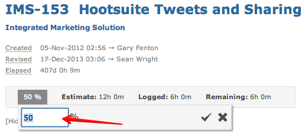
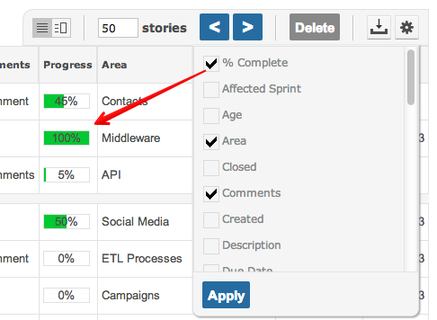

An item can indicate it's progress.
You can set work progress when creating or editing an item.

You can also view work progress on the items grid.

Note Process screen setup can restrict who interacts with work progress